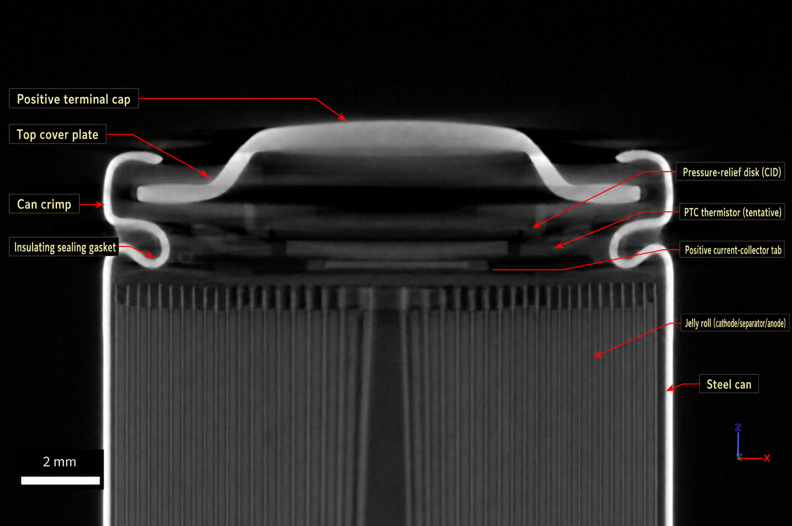
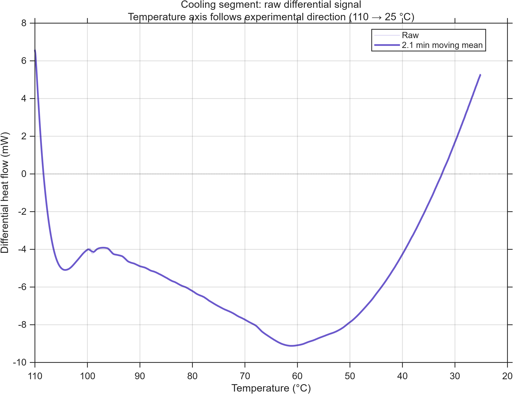
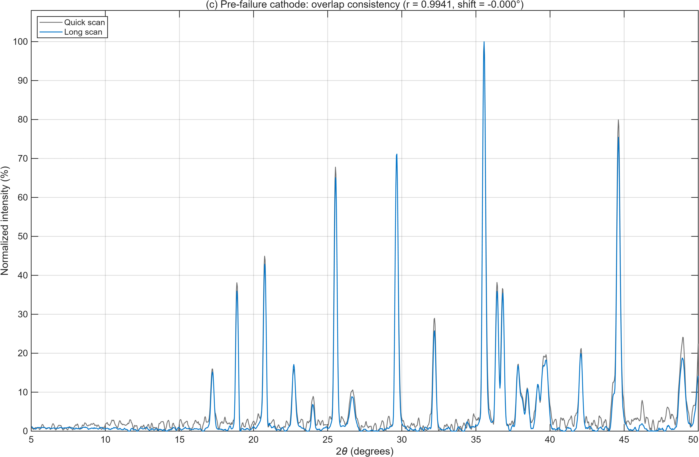

Detecting Battery Failure Before Thermal Runaway
An experimental investigation of anomalous terminal-voltage responses in a fully charged cylindrical lithium-ion cell, combining ARC with X-ray CT, DSC, TGA and XRD.
The electrical signal changed before the failure became thermally obvious.
The most important result is not a single temperature threshold, but a sequence of non-monotonic voltage events that precede rapid thermal runaway.
From raw failure data to a mechanism-focused interpretation.
This project combines experimental testing, multi-signal analysis and materials characterisation to connect terminal-voltage behaviour with plausible internal failure processes.
Why this matters
Battery-management systems often rely heavily on thermal and electrical thresholds. A reproducible voltage-drop / recovery signature that appears before rapid thermal escalation could add another layer to multi-signal early-warning logic.
Two voltage collapses, then recovery.
The ARC data define the central research problem. Both abnormal drops occur before the final rapid thermal escalation, and the second event is followed by substantial recovery.
Drop 1 · ≈19.6 h · ≈110 °C
Voltage falls from ≈3.98 V to ≈2.45–2.50 V without a comparably sharp synchronous temperature rise.
Drop 2 · ≈23.6 h · ≈125–130 °C
Voltage falls from ≈2.25 V to ≈0.20 V—approximately a 91% reduction relative to the pre-event value.
Recovery · ≈23.7–26.2 h
Terminal voltage recovers toward ≈3.4–3.5 V while self-heating accelerates, arguing against a simple permanently open or permanently hard-shorted state.


Four complementary techniques constrain the explanation.
These measurements do not independently “prove” the voltage mechanism. Their value is in ruling in or ruling out broad classes of explanation and providing structural and thermal context.







The evidence narrows the possibilities, but does not force one mechanism.
The strongest interpretation is therefore comparative: what is consistent with the observed collapse-and-recovery sequence, and what remains unresolved?
Transient electrical connection change
Substantial recovery after the second collapse is difficult to reconcile with a permanently open or permanently hard-shorted terminal state.
Pressure / top-cap protection
The CT-visible CID / pressure-relief architecture provides a physically plausible pathway for transient disconnection, although device motion was not measured in situ.
Localized internal short
A localized, intermittent or evolving internal short remains a competing explanation and cannot be excluded by the current measurements.
Experimental battery safety + multi-physics interpretation.
The project sits at the intersection of electrochemistry, thermal safety, materials characterisation and signal-level fault diagnosis.
Voltage may provide an additional early-warning channel.
The combined evidence supports the use of voltage as a complementary signal alongside surface temperature and self-heating rate, while replicated in-situ experiments are still required to distinguish safety-device activation from localized internal shorting.
What is supported
Two discrete pre-runaway voltage anomalies were observed, including a large collapse followed by substantial recovery.
What remains open
The exact internal cause of the voltage response cannot be uniquely assigned from the current offline characterisation set.
Research portfolio project
Source code, figures and version history are publicly available on GitHub.